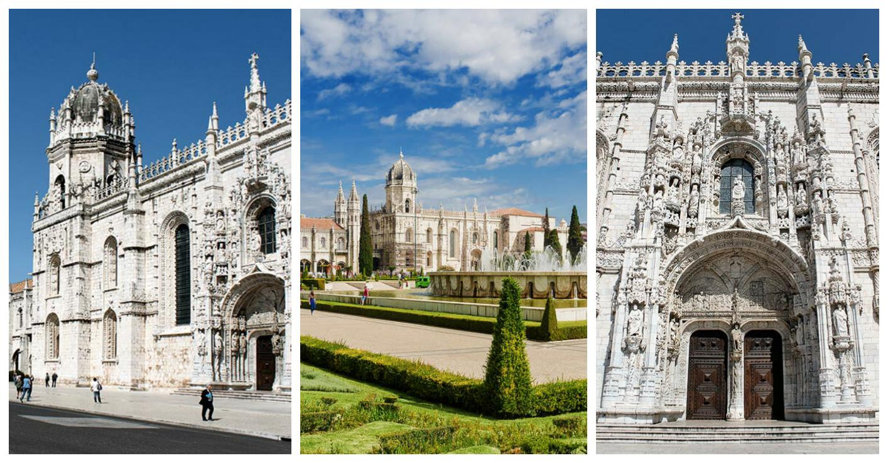
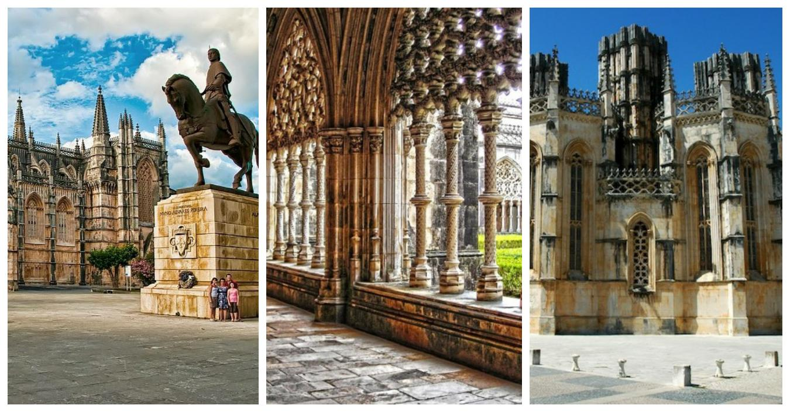
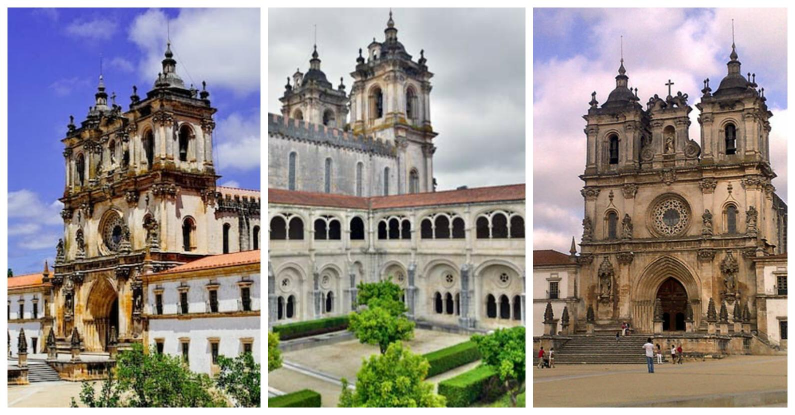
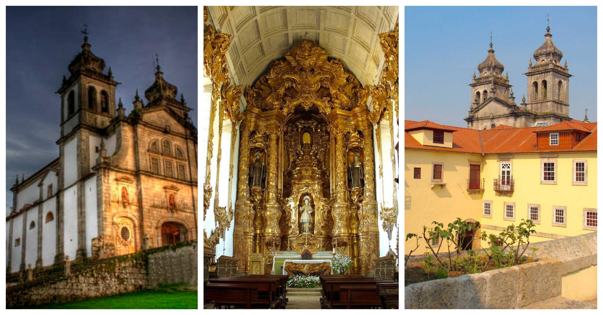
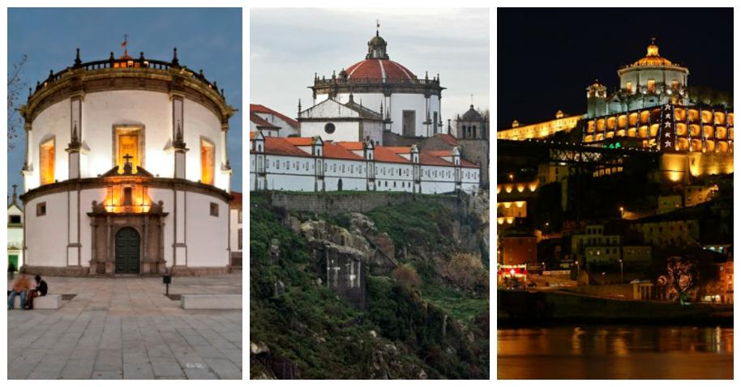

Mosteiros de Portugal
Mosteiro dos Jerónimos: Lisboa.

O Mosteiro dos Jerónimos é o mais impressionante símbolo do poder e da riqueza de Portugal durante a era dos Descobrimentos. Foi construído para comemorar a viagem de Vasco da Gama e dar graças à Virgem Maria para o seu sucesso.
O túmulo de Vasco da Gama foi colocado dentro da entrada, assim como o túmulo do poeta Luís de Camões, autor do épico Os Lusíadas, no qual ele glorifica os triunfos da Vasco Da Gama e seus compatriotas.
Outras grandes figuras da história portuguesa também estão sepultadas aqui, como D. Manuel, o rei D. Sebastião e os poetas Fernando Pessoa e Alexandre Herculano.
O mosteiro foi preenchido por monges da ordem de São Jerónimo, cujo trabalho espiritual era dar orientação aos marinheiros e rezar pela alma do rei.
É um dos grandes triunfos do gótico Europeu (tendo sido classificado pela UNESCO como património da humanidade), com muito do projeto caracterizado por elaborados detalhes esculturais e motivos marítimos. Este estilo de arquitetura ficou conhecido como manuelino, um estilo de arte que serviu para glorificar as grandes descobertas da altura.
Os claustros são magníficos, cada coluna diferentemente esculpida com monstros marinhos, corais e outros motivos evocativos do mar, da época de exploração do mundo no mar.
O interior da Igreja é espaçoso, com pilares octogonais, ricamente decorados com relevos, e fora existe um jardim consistindo de sebes, cortadas em forma de vários brasões municipais de Portugal. No centro está uma grande fonte também decorada com brasões de armas, iluminada em ocasiões especiais.
Mosteiro da Batalha: Batalha.

O mosteiro dominicanos da Batalha foi construído para comemorar a vitória dos portugueses sobre os castelhanos na batalha de Aljubarrota em 1385. Era para ser o projeto de edifício principal da monarquia portuguesa nos seguintes dois séculos. Aqui o estilo gótico altamente original, evoluiu profundamente influenciado pela arte manuelina, como demonstrado pela sua obra-prima, o claustro real.
Construído em cumprimento de um voto, por D. João para comemorar a vitória sobre os castelhanos em Aljubarrota (15 de agosto de 1385), o mosteiro dominicano da Batalha é uma das grandes obras da arte gótica.
A maioria do complexo monumental data do reinado de D. João I, quando a Igreja, o claustro real, a casa do capítulo e a capela funerária foram construídos.
A entrada principal da Igreja é através do alpendre na fachada oeste. Em ambos os lados deste portal estão esculturas dos doze apóstolos.
No centro há uma estátua de Cristo, rodeado por evangelistas, decorados com esculturas bíblicas, reis e rainhas, profetas e anjos, segurando instrumentos musicais da idade média. Esta grande profusão de esculturas é concluída com a Virgem Maria.
O interior da Igreja remete-se para o período gótico. A nave e os corredores estão separados por grossos pilares coroados com motivos vegetais.
As janelas da capela-mor, decoradas com vitrais do século XVI, a adoração dos Magos e a ressurreição de Jesus Cristo, projetando uma luz difusa dá à Igreja uma sensação de grande espiritualidade.
Mosteiro de Alcobaça: Alcobaça.

O Mosteiro de Santa Maria de Alcobaça, ao norte de Lisboa, foi fundado no século XII pelo rei D. Afonso I. O seu tamanho, a pureza do seu estilo arquitetónico, a beleza dos materiais e o cuidado com que foi construído, faz deste mosteiro uma obra-prima da arte gótica.
Os túmulos de D. Pedro e D. Inês de Castro estão entre as mais belas esculturas funerárias góticas. O próprio rei ordenou que fossem colocados um em frente do outro, para que quando chegasse o dia da Ressurreição ele estaria enfrentando a mulher que ele amava, que foi brutalmente assassinada. O túmulo de D. Pedro é decorado com delicadas esculturas, a recontar a história deste trágico caso de amor.
O mosteiro também é um excelente exemplo de um grande estabelecimento com uma infraestrutura única de sistemas hidráulicos e edifícios funcionais. Merecidamente reconhecida, a cozinha do século XVIII adiciona o interesse do grupo de edifícios monásticos do período medieval (refeitório, dormitório, casa do capítulo, claustros, quarto, salão, dormitório, sala dos monges e refeitório).
O Mosteiro de Santa Maria de Alcobaça é um local de Património Mundial da UNESCO. Logo que se entra nave da Igreja – a maior construída em Portugal na idade média – sente-se um sentimento de espiritualidade que é normalmente evocado no início da arquitetura gótica.
Mosteiro de Tibães: Mire de Tibães, Braga.

O mosteiro de São Martinho de Tibães foi fundado no século VI, mas de momento não sobra nada do que ele foi nessa altura. No século XI o mosteiro foi reconstruído e em 1567 tornou-se a casa mãe da ordem beneditina de Portugal e do Brasil. Os edifícios que vemos hoje foram construídos no século XVII e XVIII. O mosteiro foi vendido em leilão em 1864 e mais uma vez caiu em decadência e ruína, começando de novo o trabalho de restauração em 1986.
Está localizado na ala noroeste da cidade de Braga, no lado esquerdo da antiga estrada para ponte de Lima. Ele beneficiou de uma construção recente.
Este monumento é uma atração imperdível. Quatro claustros pertencem às instalações do convento. A Igreja do mosteiro é um magnífico marco barroco em Portugal. Apresenta um sistema hidráulico, uma floresta e um jardim barroco com fontes monumentais.
É ainda hoje, um dos mais impressionantes edifícios religiosos em Portugal.
A beleza da Igreja decorre da rica decoração em madeira dourada. Embora a Igreja tenha sido construída ao longo de várias gerações, a escultura de madeira em Dourados é de 1750-1760 e cobre quase todo o espaço sagrado visível na Igreja.
Os claustros são unificados por uma série de azulejos retratando a vida e a lenda de São Bento.
Mosteiro da Serra do Pilar: Vila Nova de Gaia.

O Mosteiro da Serra do Pilar é o marco arquitetónico de Gaia. A interessante Igreja e claustros são dispostos de acordo com um projeto circular único em Portugal. Parte da área foi classificada pela UNESCO como Património Mundial, em dezembro de 1996.
O convento construído no século XVI pertenceu à ordem de Santo Agostinho. A Igreja caracteriza-se por uma forma circular, uma réplica da Igreja de Santa Maria Redonda, em Roma, e é coberta por uma abóbada hemisférica com varanda estreita.
Demorou 72 anos a ser concluído devido a falta de financiamento e à turbulência política daqueles tempos.
Em 1832, durante o cerco do Porto, o Convento rapidamente se transformou em um forte improvisado. No início do século XX, o mosteiro foi usado para o quartel militar e permanece sob a tutela do Regimento de artilharia.
Dentro, a Igreja apresenta alguns altares impressionantes em folha de ouro com colunas salomónicas. Há, também, do século XVIII, esculturas em madeira policromadas dos Santos Eulalia, Apollonia e Agostinho.
Na frente da Igreja, há uma vista maravilhosa da cidade do Porto e do Rio Douro.